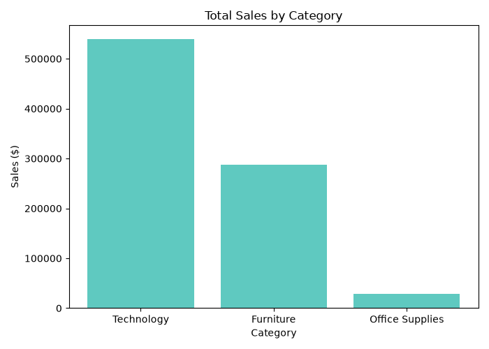
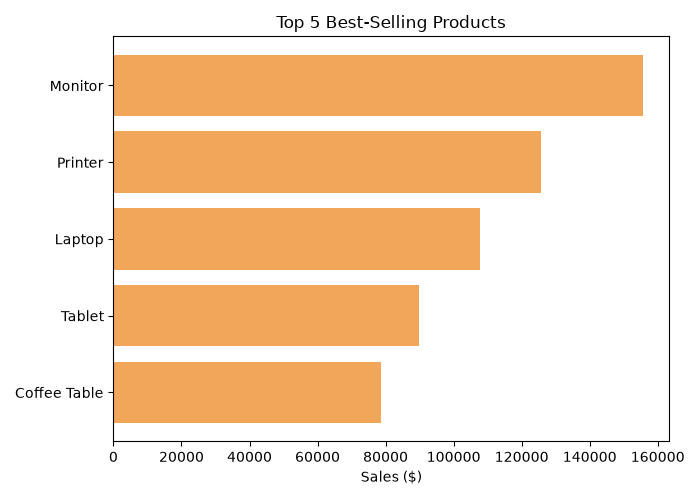
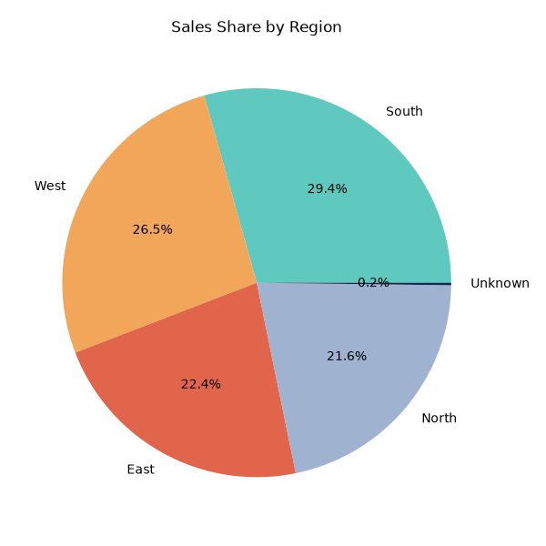

Total Sales
$856,027.18
Total Orders
600
Units Sold
3,792
Avg. Order Value
$1,426.71
Sales by Category

Top 5 Best-Selling Products

Sales Share by Region

Cleaning Notes
- Filled 10 missing sales values with 0
- Filled 5 missing quantity values with 1
- Filled 3 missing region values with 'Unknown'
- Fixed 2 rows with negative sales values
- Removed 8 duplicate rows
- Final dataset: 600 rows (started with 608)